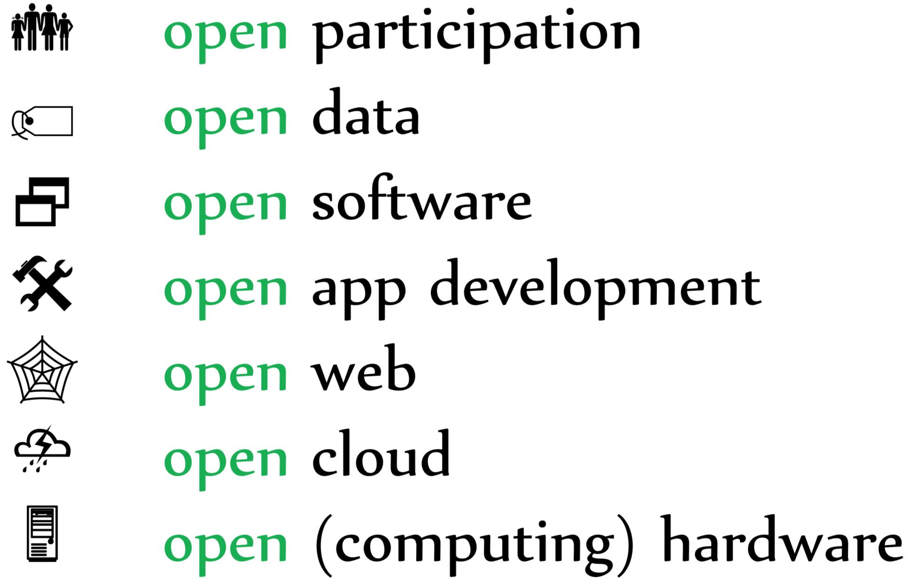
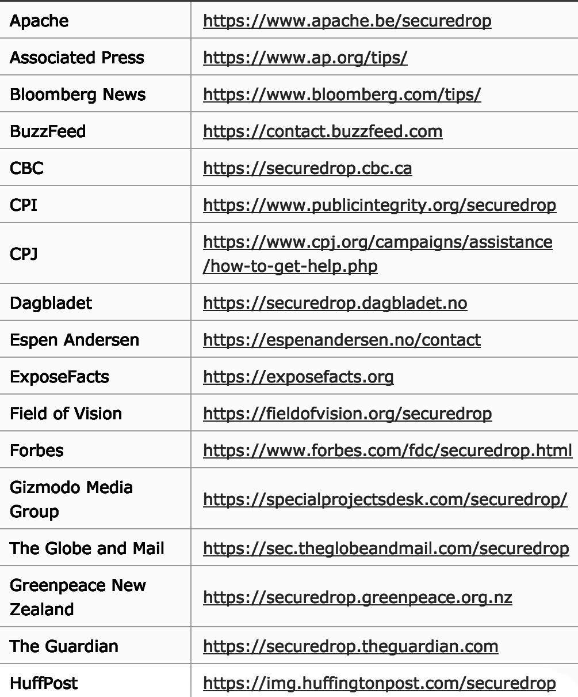

Data publicării: 20.11.2017
Autor articol: Sabin Buraga
Punerea problemei
În numeroase cazuri, multe documente conținând date de interes public – ce vizează aspecte financiare, politice, ecologice, medicale, militare etc. –, nu sunt disponibile pentru consultare sau prelucrare ulterioară în folosul comunității. Această “opacitate” contravine direct principiilor datelor deschise (open data) care stipulează faptul că orice entitate poate în mod liber să acceseze, (re)utilizeze, modifice și să partajeze conținutul – deseori, disponibil la nivel de Internet sau Web – inclusiv cu păstrarea (meta-)datelor referitoare la proveniența acestuia.
Potențialele utilizări, cu impact semnificativ, ale datelor deschise pot fi conturate în diverse arii și discipline precum cultura, știința, economia, mediul înconjurător și altele. Pentru o serie de prescripții, studii de caz și resurse de interes pentru societatea civilă încurajăm cititorul să parcurgă lucrarea The Open Data Handbook disponibilă liber pe Web.
Contextul mai larg – de la dispozitive de calcul deschise (open hardware) până la participare liberă (open participation) – este cel ilustrat de figura următoare, conform (Buraga, 2016):

Există situații specifice – de exemplu, celebrele acțiuni de obținere și de expunere a unor informații cu caracter senzitiv (whistleblowing) – care presupun un nivel relativ ridicat de asigurare a anonimității și intimității (privacy) a celor care expun asemenea date spre a fi utilizate, în întregime sau doar fragmentat, de mass-media sau terțe organizații (uzual, non-guvernamentale, non-profit).
Acțiunile referitoare la această informare onestă a opiniei publice (whistleblowing) pot fi definite ca fiind expunerea de către actualii sau foștii membri ai unei organizații a unor practici ilegale, imorale sau necorespunzătoare demarate de acea organizație asupra angajaților proprii sau a altor persoane/organizații (Lewis & Vandekerckhove, 2016). Acești indivizi răspunzători cu partajarea publică a acestor informații de interes public sunt denumiți informatori (whistleblowers) și sunt percepuți ca fiind “voci” interne sau externe ale organizației (guvernamentală, comercială,…) în cauză.
Unele dintre aceste situații pot fi considerate inițiative din cadrul așa-numitului Web cetățenesc (Richards, 2010).
Considerații cu caracter etic și legal
Pe de altă parte, asemenea cazuri pot fi încadrate în categoria furt intelectual (intelectual theft) dăunând scopurilor și încălcând drepturile de autor ale proprietarului acelor informații. Diverse considerații aliniate unor diverse perspective (e.g., guvernamental, educațional, corporatist) sunt expuse de lucrări precum (Miceli, 2004) și (Liyanarachchi & Newdick, 2009).
De asemenea, putem pune la dispoziție o suită de exemplificări recente:
- “Scurgerea” de informații în domeniul educațional – focalizate asupra efectuării de fraude, furt intelectual, distrugeri fizice/digitale sau asupra practicilor eludând etica academică – poate conduce la inițierea unor inițiative sau proceduri specifice din partea statului ori a factorilor decizionali instituționali – de pildă, persecutarea (in)voluntară. Astfel de cazuri, desfășurate în SUA, sunt descrise de (Schmidt, 2016).
- În lucrarea (Lewis & Vandekerckhove, 2016), tehnicile de whistleblowing sunt analizate din perspectiva economică, mai ales vizând protecția în Marea Britanie a persoanelor care expun informații cu caracter sensibil (i.e. mulțimea de informatori) în relație și cu sindicatele.
Lucrarea (Di Salvo, 2016) se referă la inițierea unor restricții asupra circulației libere a informațiilor incriminatoare cu impact major politic și militar – cazurile notorii privesc WikiLeaks, Pentagon Papers și numeroasele dezvăluiri ale lui Edward Snowden. Sunt, astfel, raportate:
- atacuri cibernetice de tip refuz distribuit al serviciilor (DDoS –Distributed Denial of Service) inițiate asupra sitului WikiLeaks,
- implementarea unor practici de cenzurare a conținutului (de exemplu, filtrarea accesului la anumite situri din unele locații geografice, așa cum se întâmplă și în prezent la nivelul unor națiuni) – detalii în (Weinberg et al., 2017),
- sau chiar distrugerea fizică a discurilor pe care au fost stocate documente de interes.
De asemenea, autorul observă absența unor legi și reglementări clare vizând libertatea informației (Freedom of Information), iar atunci când acestea există, ele sunt neadecvate – de pildă, nealiniate problematicilor actuale ale Internetului și Web-ului.
Putem pune în conjuncție cu cele descrise mai sus și aspectul referitor la asigurarea neutralității Internetului (network neutrality).
Posibile soluții
Una dintre cerințe este cea de a asigura anonimitatea tuturor surselor ce partajează informații de interes public, plus eliminarea (meta-)datelor privind proveniența documentelor, inclusiv identitatea și alte informații cu caracter intim referitoare la whistleblowers.
Pentru a preîntâmpina distrugerea documentelor publice, o soluție uzuală este cea de a le stoca și partaja în cadrul unei rețele de tip peer-to-peer (P2P). Platformele populare de partajare a fișierelor se bazează pe protocolul BitTorrent (Cohen, 2008). Acest protocol însă nu asigură anonimitatea și nici intimitatea (Csernai, 2010). De asemenea, adoptarea sistemului Tor pentru partajarea anonimă a documentelor pe baza protocolul BitTorrent nu este o soluție viabilă (Manils et al., 2010).
Câteva alternative sunt descrise în continuare:
-
SecureDrop – constituie un sistem open-source special conceput pentru colectarea datelor din surse anonime expuse de whistleblowers, facilitând prelucrarea și refolosirea acestora de către cei interesați (de pildă, jurnaliști și analiști independenți).
Dintre facilitățile semnificative, se pot menționa următoarele:
- Criptarea tuturor datelor vehiculate;
- Sisteme de stocare și de procesare proprii (datele nu sunt memorate pe calculatoare ale altor organizații/companii);
- Adoptarea regulilor de bună practică vizând securitatea entităților implicate;
- Minimizarea meta-datelor (eliminarea posibilelor legături ce ar putea fi stabilite între sursele de informații și cei care le utilizează ulterior);
- Lipsa jurnalizării accesului (nu se rețin date referitoare la sistemele clienților: adrese IP, caracteristici ale browser-ului Web sau ale platformei software/hardware etc.).
Un fragment din catalogul informațiilor publice disponibile este figurat mai jos.

- I2P (The Invisible Internet Project) – are ca scop crearea unei rețele de acoperire anonime pe baza paradigmei P2P cu scopul de a preîntâmpina supravegherea (network surveillance) și monitorizarea comunicațiilor de date (traffic analysis) de către terțe entități; sistemul este disponibil pe platforme multiple, inclusiv cele mobile, fiind folosit cu precădere din rațiuni legate de intimitatea datelor (privacy), oferind suport activiștilor, persoanelor oprimate politic, jurnaliștilor etc.
- Tails (The Amnesic Incognito Live System) – reprezintă un sistem de operarelive(poate fi utilizat direct de pe un stick USB ori CD) menit a oferi o colecție cuprinzătoare de instrumente criptografice și suport pentru acces anonim la Internet, anti-cenzură.
- Tor Browser – bazat pe proiectul Tor și pe navigatorul Firefox, este un browser Web ce asigură în manieră anonimă accesul la Web, preîntâmpinând analiza traficului de date și supravegherea acțiunilor utilizatorului. De asemenea, poate fi folosit de persoane care nu au acces direct la Internet, din rațiuni de cenzură (impusă la nivel guvernamental sau organizațional). Astfel, anumite situri Web de interes public – precum BalkanLeaks, Center for Public Integrity, Privacy International, ProPublica și altele – pot fi consultate prin intermediul așa-numitelor adrese (URL-uri) .onion, specifice sistemului Tor.
Concluzii
În cadrul acestui articol s-au prezentat problematica și aspectele semnificative privind asigurarea anonimității și intimității în contextul partajării libere a datelor de interes public – uzual, expuse grație activității desfășurate de către informatori onești. Suplimentar, au fost enumerate o serie de sisteme software utile, bazate pe paradigmapeer-to-peer și disponibile în regim deschis.
Referințe bibliografice
- Buraga, S., “Why 5-star Data?”, Open Source Camp,7–8 mai 2016, Iași, 2016: http://www.slideshare.net/busaco/why-5star-data
- Cohen, B., The BitTorrent Protocol Specification, 2008: http://www.bittorrent.org/beps/bep_0003.html
- Csernai, K., “The State of Privacy in P2P and BitTorrent Networks”, University of Szeged, 2010: http://ns2.csko.hu/projektek/btprivacy.pdf
- P. Di Salvo, “Strategies of Circulation Restriction in Whistleblowing. The Pentagon Papers, WikiLeaks and Snowden Cases”, Tecnoscienza. Italian Journal of Science and Technology Studies, 7 (1), pp. 67-85, 2016.
- D. Lewis, W. Vandekerckhove, “Trade Unions and the Whistleblowing Process in the UK: An Opportunity for Strategic Expansion?”, Journal of Business Ethics, Springer, 2016: http://doi.org/10.1007/s10551-016-3015-z
- G. Liyanarachchi, C. Newdick, “The Impact of Moral Reasoning and Retaliation on Whistle-Blowing: New Zealand Evidence”, Journal of Business Ethics, 89(1), pp. 37-57, 2009.
- P. Manils et al., “Compromising Tor Anonymity Exploiting P2P Information Leakage”, INRIA Research Report, 2010: http://hal.inria.fr/inria-00471556
- M. Miceli, “Whistle-Blowing Research and The Insider: Lessons Learned and Yet to Be Learned”, Journal of Management Inquiry, Vol. 13 No. 4, pp. 364-366, 2004.
- R. Richards, “Digital Citizenship and Web 2.0 Tools”, Journal of Online Learning and Teaching, Vol. 6, No. 2, June 2010: http://jolt.merlot.org/vol6no2/richards_0610.htm
- C. Schmidt, “State Level Mechanisms for Learning from Whistleblowing Cases at Institutions of Higher Education in the United States”, Problems of Management in the 21st Century, Vol. 11, No. 1, 2016.
- Z. Weinberg et al., “Topics of Controversy: An Empirical Analysis of Web Censorship Lists”, Proceedings on Privacy Enhancing Technologies 2017 (1), pp. 42–61, 2017.
- * * *, I2P (The Invisible Internet Project), 2017: http://geti2p.net/en/
- * * *, Open Definition, 2017: http://opendefinition.org/
- * * *, Real-World Onion Sites, 2017: http://github.com/alecmuffett/onion-sites-that-dont-suck/
- ***, Selected Papers in Anonymity (1977–2017): http://www.freehaven.net/anonbib/
- * * *, Tails (The Amnesic Incognito Live System), 2017: http://tails.boum.org/
- * * *, The Open Data Handbook, 2017: http://opendatahandbook.org/